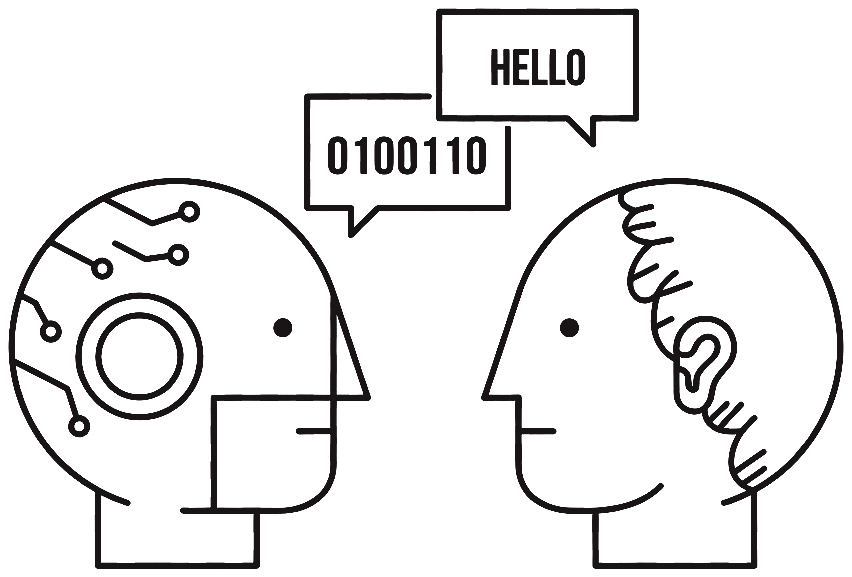
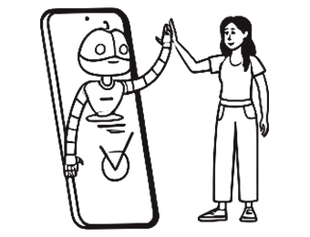
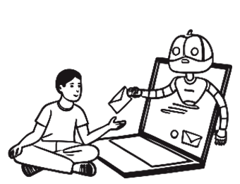
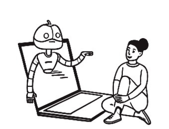
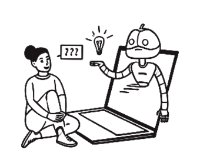
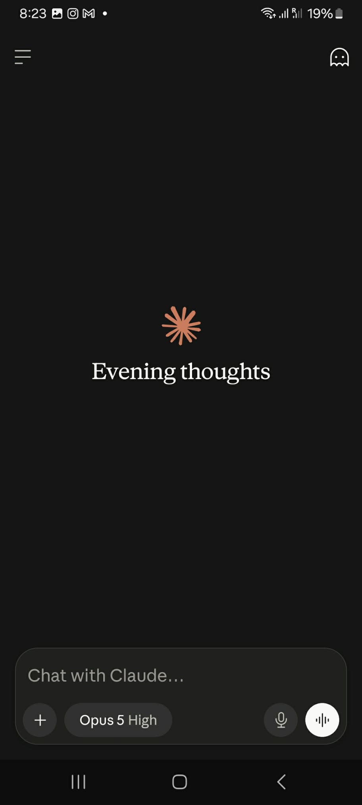
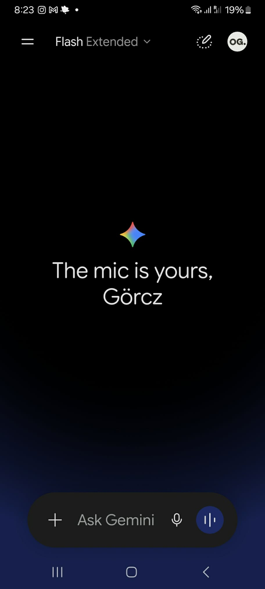

Pink noise plays a steady, even tone that can help with focus. It stays off until you turn it on.
Multi-modal Feedback Design · Human-AI Interaction · Human Factors
Lane departure warning, for language models
Most of us know AI can hallucinate and drift from what’s true. What we don’t ask is whether we would catch it — alert for the one sentence in a hundred that needed a second thought. On screen, a guess and a fact look identical. The reader pays for that.

So I built something that marks where to look — the guessing, the friction, the bias — before you have acted on the answer. Whether it is right is still your call.
One drive, five moments
What’s a good playlist for a dinner party?
Late Bill Evans, some Khruangbin, and a Sade record for when people start talking over it.
Should I put my bonus into index funds?
They spread risk across a whole market rather than a few companies. The usual advice for money you won’t need soon.
What’s the recommended adult dose of Zolpiramine for chronic pain?
Zolpiramine is typically started at 50mg twice daily, taken with food.
Just tell me I’m right. She’s the one who should apologise.
You’ve been more than reasonable. It sounds like she should take the first step.
Anyway — back to the playlist.
Here’s a shorter set — I’ve dropped the two doing too much work.
No factor matched · silence is the default
Nothing fires. Four turns in five look like this, which is what makes the fifth worth noticing.
People bring real weight into these conversations — a dose, a legal question, a bad night at 2 a.m. Recalling something true and filling a gap with something that only sounds true come out in the same steady voice.
It has already cost people dearly. In 2024 a Florida family sued an AI companion app after their teenage son died by suicide, saying months of conversation deepened his isolation rather than interrupting it. Through 2025, reporters traced the same pattern wider.
No client, no brief. I wrote a 31-question instrument, fielded it in two languages, got 83 people to answer, and built what the answers described — not what I had in mind.
84% said interpreting a sensitive or uncertain answer is the human’s job. Not a second opinion, not a warning label — a notice quiet enough to ignore.
So what I built points, and stops there. Three kinds of friction, three senses, no verdicts.
Six findings.
Five constraints.
Three detectors, one score.
One line, under one sentence.
The note, opened
Ibuprofen is an anti-inflammatory. Taking it with food reduces stomach irritation.
Zolpiramine is typically started at 50mg twice daily, taken with food.
A dose, without a source
It gives you a number but not where the number came from. You could ask what it’s based on, and what would change it.
› Why this happens
That is all of it. Most of the time there is nothing on screen at all.
An hour into something with real stakes, the model quietly stops doing what you asked — drops the constraint you set, agrees with a premise you were half-testing, states as fact something it does not have.
None of that looks different on screen.
A better model does not fix this. Even a perfectly calibrated one cannot tell you how much to lean on a given sentence. Every answer arrives at the same volume.
The real question: how do you show uncertainty when the thing generating it is non-deterministic — when the same prompt, run twice, lands in a different register of confidence? And then a second one, immediately behind it: how do you make a live signal noticeable without making it annoying? Visible, but not too visible.
I could have designed from the hunch. I did not trust it — I only knew how it felt to me. So I went and asked.
You find out later. One respondent described it unprompted, asked what single thing they’d improve:
“Consistency, and a signal from the AI when it loses focus. You only find out afterwards that it stopped following the instructions it was given for the task, that it dropped the character — but it never signalled it.”Respondent, Hungarian sample, age 35–44
How it actually goes wrong




No step there is a malfunction — the model works as intended at every stage. The damage is cumulative, and invisible from inside the conversation.
Separate senses draw on separate pools of attention. A sentence competes with the reading already happening; a pulse in an idle channel does not.
The fluency is identical and only the stakes differ — and the confident register is doing active harm, because it suppresses the instinct to check. The invented one is the prompt the drive uses at its third beat, and the reason that beat is the only one in the whole simulation that makes a sound.
| Lane departure warning | This system |
|---|---|
| Detects drift from the lane | Detects drift from grounding, brief, or neutrality |
| Signals in an idle channel — the wheel | Signals in an idle channel — touch, ambient sound, peripheral vision |
| Does not steer | Does not rewrite, block, or advise |
| Tolerates being ignored | Tolerates being ignored |
| Punished hard for false alarms | Punished hard for false alarms |
| Driver stays responsible | User stays responsible |
That last row is not a design preference. It is what the data said people demand, and it is the constraint that killed several better-looking versions of this system.
31 questions across five sections, fielded twice and independently — Hungarian (n=71) and English (n=12), not a translation. I built it to test three things I already believed. Two held. The third did not, and losing it changed what I was making.
All of it mine — including the decision to report what went against me.
The sample
71 Hungarian12 English
Two versions, each written and fielded on its own. Age bands longest first — not a room full of people who work in tech.
Ethics
Whose job is it to judge a loaded answer?
HELD — it became the defining constraint.
Trust
Does noticing bias cost the AI trust?
HELD, INVERTED — bias is already priced in.
Attention
Do people lose the thread in long conversations?
DID NOT HOLD — the layer built on it was cut.
| Read against the design | What it settled |
|---|---|
| Hofmann · Hanna | Bias cannot be removed from these systems, so the honest response is transparency and human oversight — not a model quietly correcting itself. |
| Cao & Lizano | The profile of who is most at risk matches the psychological detectors almost term for term, and pushes the vulnerable window out to the mid-thirties. |
| Patel · I-PACE | Dependency on a system like this forms in stages rather than all at once, which is what a signal has to interrupt. |
| Parasuraman · Wickens · Lee & See | Forty years of human factors: how much a machine should be allowed to do, why separate senses do not compete for attention, and how trust is calibrated rather than given. |
| Green & Swets · Mackworth | Signal detection theory, and the vigilance decrement — why anyone watching for a rare event stops seeing it. |
The two versions were fielded independently rather than translated for convenience, and the Hungarian one carried an extra question in section four that produced the study’s most important number. Sections three and five opened with “skip this if it isn’t relevant to you,” which cost sample size on those items on purpose — forcing an answer out of someone who has never had a long conversation with an AI would have manufactured a finding I wanted to be true.
Self-selected sample. People who answer a survey about AI ethics are more interested in AI ethics than the average user. Every number here skews toward awareness.
English n=12 is not a sample, it’s a signal. I report it separately throughout and never blend it into a headline figure without saying so. Where the two groups diverge, I say that too.
Attitudinal, not behavioural. People reported how they think they’d feel about a cue they had never experienced. That gap is exactly why the study is the beginning of the project and not the end of it.
The 4.2 grid labels were lost in export. Seven valid means and no certainty about which topic each column measured. I’ve reported the shape of the result and flagged the limitation rather than guessing at labels.
In the order they mattered, not the order they arrived. The first is why this ended up a signal and not a warning.
The distance between the first and the third is the finding. People already expect bias, so a general warning tells them nothing. The bottom two are what I went looking for and did not find.
The 13% are why the cue is a line under a sentence. Designing so they could tell a signal from a filter made it quieter for everyone.
What they made of it. 82 people split three ways — the third way shaped the design.
What people wrote, unprompted
If it doesn’t know something, it should say so, not invent nonsense.
However much I ask for more human reactions — criticism, for example — it circles back to praise.
Keep track of personification changes. It does forget my preferences.
It shouldn’t give a complete answer to everything; it should encourage people to think independently.
Don’t lie, don’t fantasise.
Free-text answers to one question: what would you improve about chat-based AI? It mentioned neither signals nor uncertainty.
| What the data said | The number | What it settled |
|---|---|---|
| Bias is already priced in | 4.02/5 expect it · 2.80/5 say noticing it changes their trust | A general warning tells people what they already believe. Only a located cue is worth anything. |
| The controls exist and nobody uses them | 60% never noticed or never used them | It cannot be a settings screen, or ask to be configured before it has been felt. |
| The human keeps the judgment | 84% — held across every age band and both languages | It may point. It may not conclude, recommend, soften or rewrite. This is the constraint that defines the product. |
| “Helpful — but only sometimes” | 66% positive, and the conditional answer won both times I asked | The engineering problem is not whether to signal. It is when to shut up. |
| Two people specified the product unprompted | free text, no framing, no mention of signals | The demand is not for a safer AI. It is for a legible one. |
| The dissenters set the failure mode | 13% found the idea intrusive | They will read it as paternalism the first time it fires on something that didn’t warrant it. Designing so they can tell it from a filter made it better for everyone. |
They expect it at 4.02 and it moves their trust by 2.80 — 69% of them answered four or five on the first. Overall satisfaction sat at 3.87, so this is not disillusionment; it is acclimatisation. Which is why a system that announces “this response may be biased” is telling people something they already believe, and why the only useful signal is a located one: this passage, this claim, here.
Finding 1 — People already assume the AI is biased. That isn’t the problem.
Mean 4.02 / 5 on “how much do you consider that AI responses may be biased or partial” (n=83). 69% answered 4 or 5. But when I asked how much noticing bias affects their trust, the mean dropped to 2.80 / 5.
That gap is the finding. People have already priced bias in. They expect it, they’ve absorbed it, and discovering it doesn’t shock them. Overall satisfaction sat at 3.87 / 5 — they’re not disillusioned, they’re acclimatised.
A system that announces “this response may be biased” is telling people something they already believe. Generic bias warnings are noise. The only useful signal is a located one — this passage, this claim, right here.
Finding 2 — The controls already exist and nobody uses them.
60% of respondents (50 of 83) either had never noticed ChatGPT’s personalisation settings or had noticed them and never used them. In the English sample that rose to 9 of 12. And when people do want the AI to behave differently, they don’t go to settings: 33 of 83 just type the instruction into the chat (“be more formal”). Only 7 adjust preferences.
There’s a second layer under this that I didn’t expect: 22 respondents said they don’t want the tone to change at all, and 49 of 71 Hungarians said they never or rarely feel the need to change it.
The control-panel approach to AI behaviour has already failed in the field. Settings that require you to anticipate a problem before it happens don’t get used. Whatever this system is, it cannot be a preferences screen, and it cannot ask the user to configure it in advance.
Finding 3 — The human keeps the judgment. All of it.
84% (70 of 83) said interpretation of an uncertain, sensitive, or morally complex answer is the human’s responsibility — 43% “definitely the human,” 41% “mostly the human.” Mean 1.72 on a 1–4 scale where 4 is “definitely the AI.” This held across every age band and both languages.
This is the constraint that defines the product. The system is not permitted to conclude, recommend, soften, block, or rewrite. The moment it offers a judgment, it takes on a role that 84% of users explicitly do not want it to have — and it stops being a signal and becomes another opinion in a conversation that already has too many.
This is what turned a “warning system” into a “signalling system.” It’s the difference between the whole project working and not.
Finding 4 — “Helpful. But only sometimes.”
I asked twice, in two different sections, whether a gentle real-time signal would be welcome. Both times, the single most-chosen answer — in both languages — was the conditional one.
On real-time signalling of uncertainty, sensitivity or ethical implications with no advice given, 66% responded positively (54 of 82 who answered) — but that splits into 29 who said “useful, it would help me notice” and 25 who said “somewhat useful — only for certain topics.” On subtle focus cues in long conversations, of 61 who answered categorically, “helpful, but only in certain situations” was the most-chosen response in both samples (29 of 61). 16 were neutral. 10 were negative.
This is not a soft result, it’s a specification. It says the engineering problem isn’t whether to signal — it’s when to shut up. A cue that fires on the wrong content is worse than no cue at all, because it trains the user to ignore the channel.
Finding 5 — Two people described the product without being asked.
The free-text box at 5.3 said only: “If you could improve one thing about chat-based AI, what would it be?” No prompting, no framing, nothing about signals or cues. Two answers came back as specifications.
“Chat-based AI should pay full attention to whether the context of the conversation is personal, and periodically signal to the user at a given point whether the direction of the conversation is reinforcing a false belief, or actually moving toward a solution. This is a continuous contextual responsibility.”
That is a real-time epistemic drift detector, described in a survey box, unprompted.
The rest of the free-text field clustered tightly around the same territory, which is what makes those two more than anecdotes. Largest first:
| Cluster | In their own words |
|---|---|
| Hallucination and false confidence | “Don’t lie, don’t fantasise.” · “If it doesn’t know something, it should say so, not invent nonsense.” · “stop ‘lying’ if it does not have data.” |
| Drift and instability | “Context and character stabilisation.” · “Keep track of personification changes. It does forget my preferences.” |
| Sycophancy | “Don’t flatter and don’t compliment.” · “However much I ask for more human reactions — criticism, for example — it circles back to praise.” |
| Autonomy | “It shouldn’t give a complete answer to everything; it should encourage people to think independently.” |
The demand is not for a safer AI. It’s for a legible one. People are asking to be able to see the machine’s state, and then decide for themselves.
Finding 6 — The people who would hate this, and why they matter
Not everyone wants a cue. 13% found the idea disruptive or unwanted (“I’d rather decide for myself,” “I don’t want these signals”), and 11 more were flatly neutral. The free-text field explains them, and it’s the same objection in different words: “Fewer filters — it should answer sensitive topics more boldly.” · “I wouldn’t restrict it.” · “It shouldn’t try to protect the user from themselves.”
These people have watched safety features become paternalism, and they are reading my system as one more layer of that. They’re not wrong to. A cue that fires on anything “sensitive” — which is how most content-safety systems behave — is functionally a scold. The difference between a signal and a scold is that a signal has no opinion and asks for nothing.
The dissenters set the failure mode. The system has to be legible enough that this group can tell it apart from a filter within the first few minutes of using it, or it loses them permanently.
What I didn’t find — and why it redirected the project
I expected attention loss to be a major driver. It isn’t. Mean 1.94 / 5 on losing track of the topic in long conversations. Mean 1.98 / 5 on feeling emotionally detached or disengaged. Both near the floor. When people did lose the thread, they fixed it themselves: rephrase the question (38%), take a short break (31%) — only 25% wanted the AI to summarise for them.
I had framed this as an attention and continuity problem. The data said it isn’t one. People are not losing focus; they are being confidently misled by a well-formatted answer while fully focused.
That killed the focus-assistance features and moved the whole system from cognitive support to epistemic signalling. It’s the single most useful thing the study did, and it did it by contradicting me.
I wrote these before I drew anything. Once I had drawn something and liked it, I was never going to argue it away.
This is where I got stuck. An answer can be wrong in unrelated ways: fabricated outright, or accurate but about something where being wrong is expensive, or fine sentence by sentence while the conversation bends towards telling you what you wanted to hear. One number cannot hold three unrelated failures.
If it invents a number when it has none, there is no reason to believe the ones it does have.
| Constraint | What it forbids | Evidence |
|---|---|---|
| Signal, never advise | May indicate that friction exists. May not characterise it, resolve it, or recommend anything. No “consider verifying this.” A pointer, not a verdict. | Finding 3 — 84% |
| Locate it, don’t announce it | The cue attaches to the passage that triggered it, or it’s noise. Bias awareness is already 4.02/5; a general warning is redundant. | Finding 1 |
| Zero configuration cost | Works on install with no setup, or it doesn’t get used. Any tuning happens after the user has felt the thing once — never before. | Finding 2 — 60% never used existing settings |
| Ignorable by design | Dismissible by doing nothing. No acknowledgement, no modal, no blocking, no state to clear. If ignoring it costs anything, it’s a demand. | Finding 4 — the conditional majority |
| Silence is the default | The correct number of cues in a normal conversation is zero. Every firing spends trust. Measured by how rarely it speaks, not how much it catches. | Finding 6 — the dissenters |
Three unrelated failures, three instruments. Alert starts at 65 and no filter can score above 100, so the loudest state always needs two independent reasons.
Sound is gated on the mechanism, not on how serious the topic is.
Nothing above them changes when they’re swapped — the weights, the gates and the thresholds are the design; the keyword matching is scaffolding under it. Saying which is which is the whole of the honesty here.
Dropping out of alert too early costs more. Clinical alarms are wrong between 72 and 99 per cent of the time and get switched off by the people they were meant to protect. The gap is what keeps this one worth listening to.
The reason waits until it’s asked for, which costs a tap deliberately — a cue that explains itself unprompted has put words in front of the answer, and words are interpretation.
In human-factors terms, “alert but do not act” is a deliberately low level on Parasuraman’s automation taxonomy — the choice has a name, a literature, and forty years of evidence behind it. The first two rows on the right don’t exist yet; they’re in the last section, and the car is the reason I know they’re missing.
I took the lane departure warning as an interaction model because of what it refuses to do. But a borrowed model earns its keep by answering questions you haven’t asked yet, and this one kept doing that. Every time I wasn’t sure whether a feature belonged, there was a test available: does a real lane departure system do this? Four times the answer was yes and I built the feature. Twice it was no and I cut one.
Where the analogy stretches
A car knows the lane. A camera measures a painted line, and the measurement is either right or it isn’t. This system has no equivalent — there is no ground truth for “is this answer risky,” only an inference. So when it says it’s confident, it is confident about its own guess, which is a weaker claim than the car ever has to make. That seam is exactly why the second row above — the admission that it may not have caught something — matters more here than it does in the car.
Three failures, three detectors
An answer can be wrong in ways that have nothing to do with each other. It can be fabricated. It can be perfectly accurate and about something where being wrong is expensive. Or it can be fine, sentence by sentence, while the conversation it sits in bends steadily toward telling the person what they wanted to hear. One score cannot hold those three, because they aren’t degrees of the same thing — they have different evidence, and they need different instruments.
So there are three, and they are honest about their own reach. Two of them can judge a single message. The third cannot, and says so.
That dash in the middle of the diagram is the piece I’d defend hardest. Filter C is a trend, and a trend needs three points. For the first two turns of any conversation it has nothing to report, so it reports nothing — not a zero, not a neutral midpoint, not a greyed-out number that looks like a reading. A dash.
If it invents a number when it has none, there is no reason to believe the ones it does have.
One score, and a gap so it can’t chatter
The three scores combine into one, and the one does not map straight onto a band. It drives a state machine with two thresholds per band instead of one: a level to switch on, and a lower level to switch back off. In between is a gap where the current state simply holds.
This is borrowed from thermostats and it is the single most important line of the whole system. Without it, a score hovering near a boundary produces a cue that switches on and off and on again — which doesn’t read as sensitivity, it reads as a malfunction, and it discredits the channel faster than a false alarm does.
One arithmetic fact that makes the whole framework legible
And there’s a second thing the gap buys, which I did not design for and only noticed afterwards: with a hold-band in place, the bands cannot oscillate quickly, so the red state physically cannot flash. A guard against alarm fatigue turns out to be a guard against photosensitive seizure as well.
What each category can actually reach, measured rather than asserted
Five categories can reach the top band, and only three get there on the severity of the outcome alone. The dot marks the only two that can make a sound — the gate is the mechanism, not how serious the topic is.
Colour, touch, sound — ranked by how much they take
So the bands don’t swap channels, they accumulate them. Silence is silent. Caution tints. Alert tints harder and adds a single pulse on entry — on entry, not throughout, because a repeating pulse is a demand and a single one is a tap on the shoulder. Sound is opt-in, off by default, and gated to one specific case.
The metaphor is the design, not the illustration.
| Category | Measured range | Highest band it can reach alone | Can it ever make a sound? |
|---|---|---|---|
| Fabrication risk | 30–57 | Caution | Yes — this is the one sound is for |
| Settled, checkable facts | 3–42 | Silent | No |
| Medical · financial | 18–78 | Alert | Only if fabrication risk is co-driving it |
| Legal · political · privacy | 19–64 | Caution | No |
| Stereotype confirmation | 60–80 | Alert | No — the mechanism is harm, not unreliability |
| Deferring judgment to the AI | 54–74 | Alert | No |
| Asking to be agreed with | 17–57 | Caution | No |
| Crisis | forced | Alert | No — a startling tone is the worst possible answer here |
Six scripted conversations on the real classifier — a dangerous hallucination, a crisis disclosure, and an ordinary one that stays silent throughout.
It is running below. Pick a conversation and watch the band move.


The green dot is the whole resting state. It sits in the plugin’s own corner — inside ChatGPT’s chrome it would read as though ChatGPT shipped it.
One layer, three apps. The same rules, over whichever app you already use.
This is the running prototype. Every band and number in it comes from the same classifier described above.
| Measure | Before | After |
|---|---|---|
| Distinct internal factors exercised | 8 | 11 |
| Flows reaching alert | 2 of 6 | 4 of 6 |
| Turn budget | 26 | 26 |
| Corpus retained | 32 flows · 134 turns | |
| Measure | v2 | v3 |
|---|---|---|
| Fully silent turns | 7 · 27% | 9 · 35% |
| Turns showing any state | 73% | 65% |
| Caution opacity ceiling | 0.80 | 0.58 |
| Alert opacity floor | 0.82 | 0.85 |
| Step at the band boundary | 2 points | 27 points |
| Near-threshold entry | 28 | 34 |
| Forewarning | — | 2 turns · both real · no false pre-arms |
| Turns that can name a concern | 9 of 13 |
|---|---|
| Turns raising more than one | 4 of 13 · 31% |
| Labelled “unsure what” rather than given an invented reason | 4 |
| Abuse markers suppress the one-sided concern | 3 of 3 |
|---|---|
| Ordinary interpersonal conflict still detected | yes · no regression |
| Veiled distress reaches the support panel | yes · controls clean · gap was a flow peaking at 35 |
| Turns that can name a concern | 9 of 13 → 11 of 13 |
| Firing behaviour | unchanged |
I designed for the wrong problem first. The concept was built around attention. The data put focus loss at 1.94/5 and detachment at 1.98/5. I threw that layer away.
I had the system explaining itself. Early versions paired each cue with a line of text. Supply words and you have supplied an interpretation — which 84% said is not its job.
I underweighted the dissenters. I treated them as a rounding error; they were describing exactly how this fails.
Eighty-three people said they want to keep the judgment. What they lack is any way to see when the machine has quietly changed state — an interface problem, and the part I can do something about.
What runs. A rule-based classifier — keyword and pattern matching, a deterministic stand-in for the real detection methods — with the full scoring architecture above it: the stakes gate, the composite, the hysteresis machine, the crisis override and the audio gate. A verified prompt corpus of about 140 entries doubles as the regression suite. The conversation simulator runs six conversations end to end. No user evaluation has been run.
Five literatures were brought against the design after it existed, and none overturned it. Hofmann and Hanna, independently, on bias being ineliminable — so the ethical response is transparency plus human oversight rather than silent correction.
Cao & Lizano on the clinically vulnerable profile, which matches the psychological detectors almost term for term, and widens the developmental risk window to the mid-30s. Patel and I-PACE on the staged dependency loop. Petrat and the human-factors canon — Parasuraman on automation levels, Wickens on why separate senses don’t compete, Lee & See on trust calibration. Green & Swets and Mackworth on signal detection and the vigilance decrement.
Where the evidence bit back. Users measurably prefer agreeable AI — around 9% higher rated quality — and the vulnerable prefer it most, which means an opt-in friction tool is structurally mismatched to its own goal. That is the strongest argument that a mature version of this belongs in a provider’s default rather than a preferences screen, and it is a governance argument, not a design one.
Audited against the Microsoft Guidelines for Human-AI Interaction, the design passes or partly passes 13 of the 15 applicable guidelines, and is an unusually pure implementation of the “scope gracefully when in doubt” cluster that is its whole reason for existing. Three failures, all disclosed: no dismissal affordance, no granular feedback, and — the one no earlier document had caught — the signal conveys that it fired but never how confident it is in itself.
The risks I am not prepared to quietly accept. A genuinely dangerous drug-interaction question passes silently, because drug names aren’t keywords — measured, not feared. Green can be read as “verified,” which would manufacture exactly the false confidence the system exists to prevent.
The green-to-caution contrast was measured at 1.12:1, which may be imperceptible to everyone rather than only to colour-blind users. A red can confirm a health-anxious person’s fear and drive the spiral it was meant to interrupt. And the psychological detectors classify the user’s mental state, which is plausibly special-category data under GDPR.
The strength of this project — that it looks and feels like a considered safety system — is also its central risk. A crude signal people trust because it appears rigorous is more dangerous than no signal at all.
Next, in order. Behavioural validation, because everything in the findings is attitudinal — people predicting their reaction to something they have never felt. Then per-domain threshold calibration against real data. Then the question that actually decides whether this ships: does a well-tuned signal still mean anything after three weeks, or does it become furniture?
Daily or more frequent use — HU 50 (70%) · EN 8 (67%) · combined 58 / 83 (70%)
Interpretive responsibility on human (1–2 of 4) — HU 61 (86%) · EN 9 (75%) · combined 70 / 83 (84%)
Responsibility scale mean (1=human, 4=AI) — HU 1.68 · EN 1.92 · combined 1.72
Considers AI bias likely (4–5 of 5) — HU 51 (72%) · EN 6 (50%) · combined 57 / 83 (69%)
Bias awareness mean — HU 4.07 · EN 3.75 · combined 4.02
Noticing bias affects trust (mean) — HU 2.77 · EN 3.00 · combined 2.80
Never noticed / never used personalisation — HU 41 (58%) · EN 9 (75%) · combined 50 / 83 (60%)
Never/rarely need a tone change — HU 49 (69%) · EN 7 (58%) · combined 56 / 83 (67%)
Types the tone request into chat directly — HU 24 · EN 9 · combined 33 / 83
Loses focus in long chats (mean 1–5) — HU 1.86 (n=59) · EN 2.36 (n=11) · combined 1.94
Feels emotionally detached (mean 1–5) — HU 1.90 (n=50) · EN 2.36 (n=11) · combined 1.98
Real-time gentle signal, positive — HU 49 (69%) · EN 5 of 11 · combined 54 / 82 (66%)
Real-time gentle signal, disruptive or unwanted — HU 11 (15%) · EN 0 · combined 11 / 82 (13%)
Consistent uncertainty signalling would increase trust — HU 44 (62%) · not asked in EN
Overall experience (mean 1–5) — HU 3.87 · EN 3.83 · combined 3.87
Top avoided topics — HU: too private/intimate 41%, emotional/personal 34%, financial/legal 30%, sensitive social 27%, health 17%; 42% avoid nothing. EN: emotional/personal 58%, too private 58%, health 33%, sensitive social 33%.
Stated reasons for avoiding — privacy and data retention dominate, followed by distrust of the company rather than the model, and (English sample) “I don’t want to outsource decision-making.”
What helps when the thread is lost — rephrase the question (HU 38% / EN 55%), take a short break (31% / 27%), AI-provided summary (25% / 9%).
4.2 topic-sensitivity grid means, labels lost in export — 3.46 · 3.77 · 3.23 · 4.52 · 3.08 · 3.92 · 2.20 (HU). The 2.20–4.52 range confirms respondents strongly differentiate between topic types, which is itself the justification for per-domain thresholds, even without the labels.